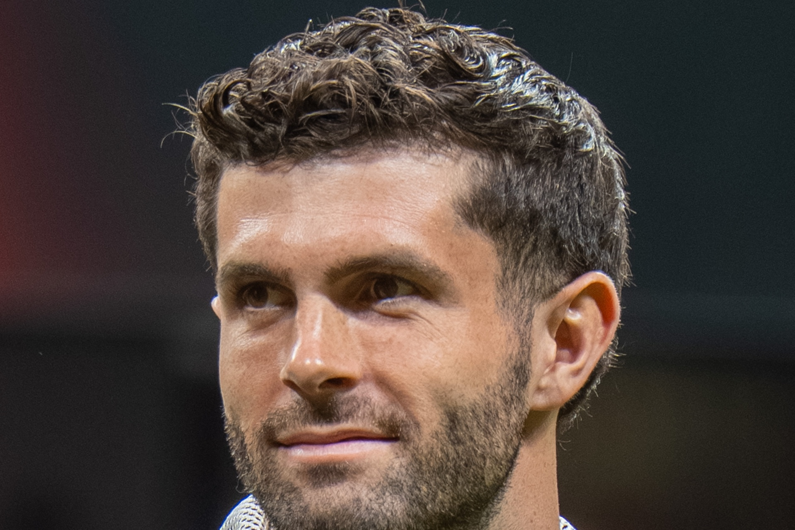

Christian Pulisic has been named the wonder boy of America, carrying expectations unlike any other American soccer player before him. He left his home as a teenager, broke records in Germany, joined one of England’s largest clubs, and even at the height of his career, he was privately experiencing one of the lowest moments of his career.
Christian Mate Pulisic was born on September 18, 1998, in Hershey, Pennsylvania. Both of his parents had played soccer at the collegiate level, and the sport would quickly become an integral part of his life. His talents quickly separated him from his surrounding peers and even gained attraction from the German super club: Borussia Dortmund.
Pulisic would move to Germany before turning 16, requiring him to mature far faster compared to other teenagers his age because he was all alone. He made his first-team debut at only 17 years old and, before long, competed in the Bundesliga and Champions League, showing promise as one of the greatest players in American soccer history.
His early success carried along what seemed like insurmountable expectations. Pulisic was no longer viewed as a talented player, but as the person responsible for elevating men’s soccer. He became the youngest American to score in the World Cup and the captain of the team. His achievements continued to build expectations that he himself felt were unachievable.
Pulisic’s earliest hardships came when the United States was eliminated from qualifying during the 2018 World Cup. A month after the painful defeat, Pulsiic wrote how he had been depressed since then. Even though the defeat should have been carried by the whole team, Pulisic was positioned in the team’s limelight, making it difficult for him to separate the team’s disappointment from his own identity.
In January 2019, Pulisic would sign for Chelsea, making him one of the most expensive American soccer players ever, placing him under heavy scrutiny from the media.
His first season included major successes, and after Covid-19 occurred, he became one of Chelsea’s most dangerous players. However, this also would mark one of the most difficult moments in his journey, when he would suffer a serious hamstring injury, forcing him to leave the match. This would be only the first injury, and many more would come after in the following seasons.
During the pandemic, he also had less contact with his longtime support system in the United States, namely his family. He would be isolated in Europe, having to live abroad by himself.
His isolation became even more painful when he lost his grandfather in December of 2020. He would share how close a relationship he and his grandfather had and how important a role he played in helping Christian obtain European citizenship and pursue a career at Dortmund.
Pulisic would train hard, eat healthy, and recover as efficiently as possible, but this didn’t stop his body from breaking down when it couldn’t handle the stress anymore. Pulisic would reach what he later called “rock bottom” in February 2021, when he battled severe depression and sought professional help.
Initially, Pulisic was reluctant to seek support, believing he was too tough and that pain wasn’t something that needed to be shown. The belief was very common amongst elite male athletes, and many believed that seeking help could be interpreted as weakness. However, after contacting a therapist, he realized that it should never be considered harmful and that expressing your feelings to another person could help tremendously.
Pulisic would also rely heavily on his family and close friends for support, later writing that he would not have made it through his period of “rock bottom” without the support of his loved ones. Speaking to his friends and family about topics unrelated to soccer really helped him to remain grounded.
“The world saw a Champions League winner. Few could see the young man living alone, grieving, injured, and quietly reaching his breaking point.”
Although the therapist helped a lot, it did not remove the challenges he had to face in his life. He continued to experience injuries, competition for playing time, and public scrutiny. Even to this day, with the USA being knocked out of the World Cup against Belgium, Pulisic has undergone a lot of criticism for his performance because of the heavy expectations placed on him. However, with his support system, his openness in seeking help, and the many lessons he learned along his journey in football, he can face these challenges confident that he has what it takes to conquer them.
References
Sources
- Chelsea FC — Christian Pulisic discusses mental health and the importance of expressing how you feel (external link)
- ESPN — USMNT and Chelsea star Christian Pulisic’s new book: What we learned about Tuchel, mental health and more (external link)
- FOX Sports — Clint Dempsey advised Christian Pulisic on how to get through tough times (external link)
- FOX Sports — Christian Pulisic on battling depression (external link)
- CBS Sports — Christian Pulisic opens up about mental health and changing his way of thinking (external link)
- The Players’ Tribune — “1,834 Days” by Christian Pulisic (external link)
- ESPN — Christian Pulisic shares his story in “Pulisic: My Journey So Far” (external link)